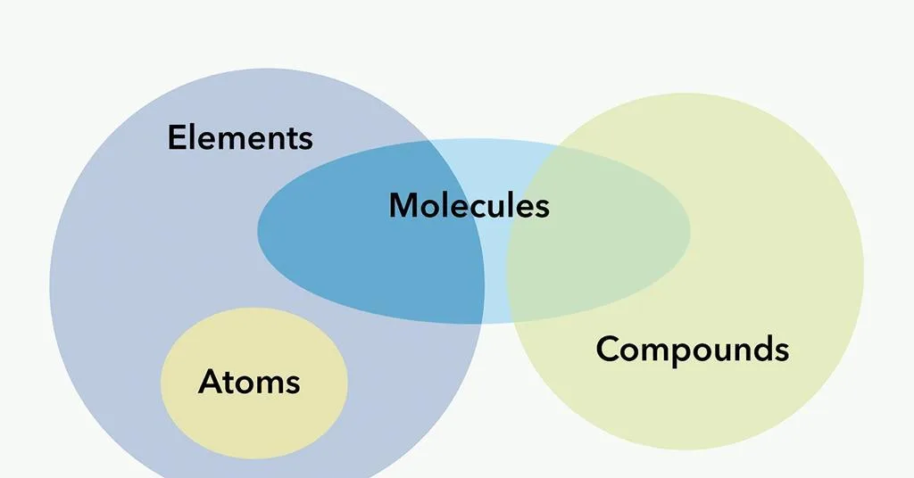
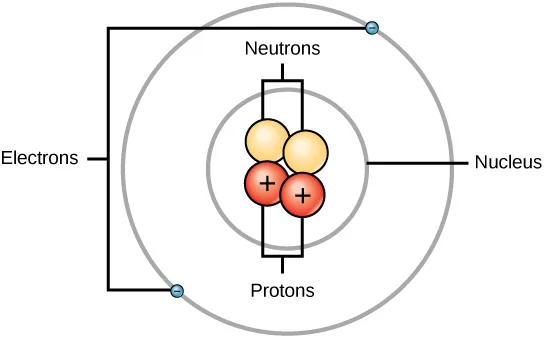
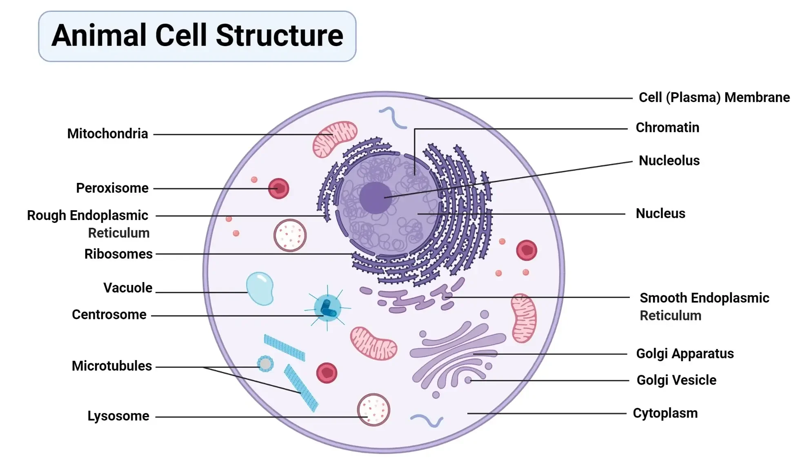
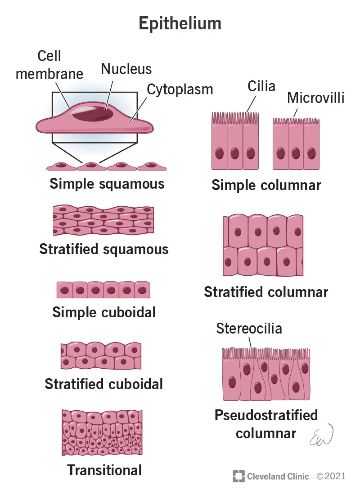
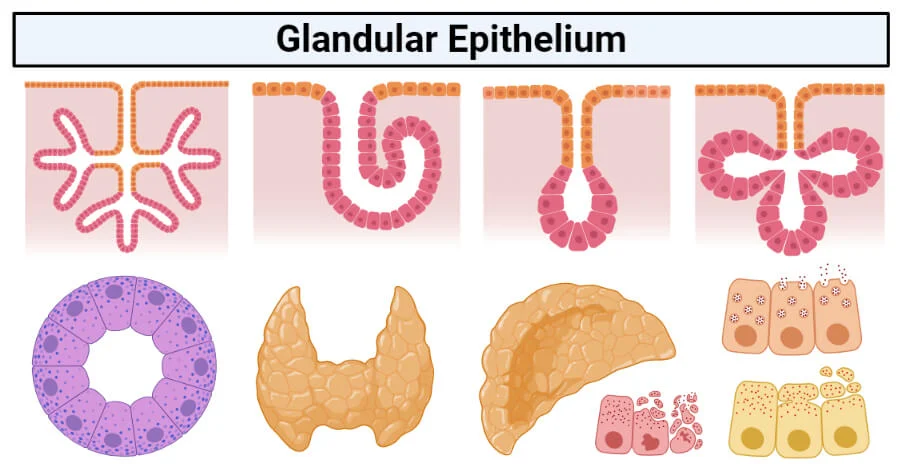
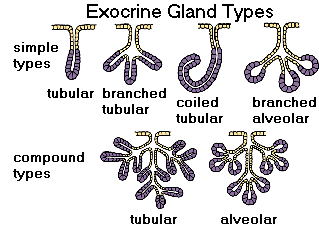
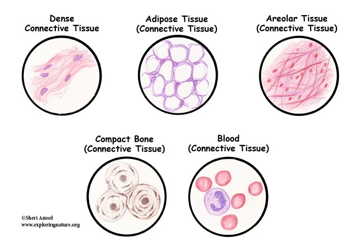
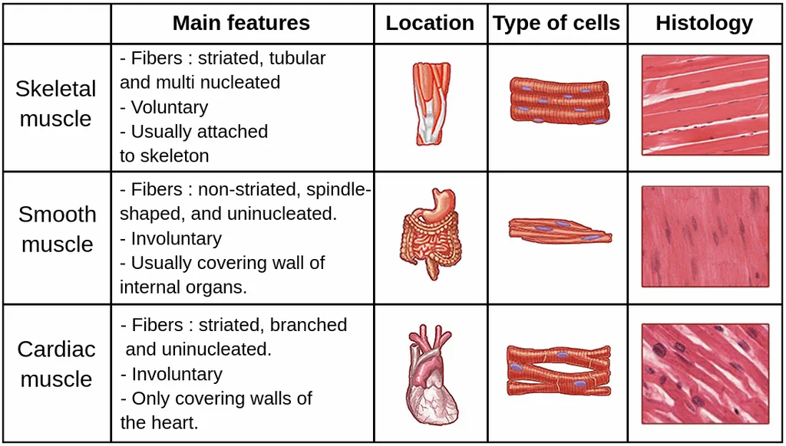

Expanded Nursing Uganda Explanation
Atoms, molecules and compounds should be reviewed through safe maternal and newborn assessment, early recognition of danger signs, respectful communication and timely referral. Connect the definition to vital signs, bleeding, fetal or newborn wellbeing, patient education and local protocol requirements.
Contents, 15 sections (tap to expand)
01 Atoms, molecules and compounds
Everything around us, including our bodies, is made up of tiny particles. Let's look at these basic chemical components.
- Atoms: These are the smallest particles of an element . An element is a pure substance like oxygen, hydrogen, or carbon. Atoms are extremely small. Inside an atom, there's a central nucleus (like the sun in our solar system). The nucleus contains positively charged particles called protons and particles with no charge called neutrons . Tiny, negatively charged particles called electrons orbit around the nucleus. In a neutral atom, the number of protons and electrons is equal, so the positive and negative charges balance out.
- Molecules: When two or more atoms are joined together by a strong link called a chemical bond , they form a molecule. If the molecule is made of atoms from the same element (like O₂, two oxygen atoms joined), it's just a molecule of that element. If the molecule is made of atoms from different elements joined together (like H₂O, two hydrogen atoms and one oxygen atom joined), it's called a compound . Water is a compound. Many substances in the body are compounds.
- Chemical Bonds: The links that hold atoms together in molecules are chemical bonds. They are formed by the electrons in the outer part of the atoms. Covalent bonds : Atoms share electrons to become more stable. These bonds are often strong and create stable molecules like water.
- Ionic bonds : Electrons are transferred from one atom to another. This creates electrically charged atoms called ions (e.g., sodium atom loses an electron and becomes a positive sodium ion, Na⁺; chlorine atom gains an electron and becomes a negative chloride ion, Cl⁻). These charged ions are attracted to each other, forming an ionic bond.
- Electrolytes: When ionic compounds (like sodium chloride, NaCl, which is table salt) dissolve in water, they separate into their positive and negative ions (Na⁺ and Cl⁻). These ions in water can conduct electricity. In the body, these ions are called electrolytes and are very important for nerve signals , muscle contraction , and balancing fluids .
(A simple diagram of an atom showing a nucleus with protons and neutrons, and electrons orbiting it.)
02 Cell structure and its functions
Cell: Cell is the basic living structural and functional unit of the body, and the study of cells is called Cytology.
- Cell membrane: This separates the cells from their external environment . Cell membrane also protects the cell from injury.
- Cytoplasm: This is the substance that surrounds the organelles and is located between the nucleus and the plasma membrane. This contains raw materials and provides these raw materials to cell organelles for their normal functioning .
- Nucleus: This is usually the largest organelle and is often found near the center of the cell. It's the control center . It contains the cell's genetic material (DNA) , organized into structures called chromosomes . The DNA contains the instructions for all the cell's activities, like making proteins and dividing. The nucleus is surrounded by a nuclear envelope (a membrane with pores).
- Organelles (The Cell's "Machines"): These are small structures within the cytoplasm, each doing a specific job: Mitochondria: Often called the " powerhouses " of the cell. They perform a process called aerobic respiration, using oxygen to convert sugar and fats into energy (ATP) . Cells that need a lot of energy (like muscle cells) have many mitochondria.
- Ribosomes: Tiny structures that are the sites of protein synthesis . They read instructions from the nucleus (carried by mRNA) and assemble amino acids into proteins. Some are free in the cytoplasm, others are attached to the ER.
- Endoplasmic Reticulum (ER): A network of interconnected membranes that extends throughout the cytoplasm. Rough ER : Has ribosomes attached and is involved in making proteins that will be sent outside the cell or to other organelles. Smooth ER : Involved in making fats and steroids, and detoxifying harmful substances like drugs.
- Golgi Apparatus: Modifies, sorts, and packages proteins and fats made in the ER. It prepares them for transport out of the cell or to other parts of the cell. Think of it as the cell's " packaging and shipping department ."
- Lysosomes: Contain powerful enzymes that break down waste materials , old organelles, bacteria, and other foreign invaders. They are like the cell's " recycling and waste disposal center ."
- Cytoskeleton: A network of protein fibres that provides support for the cell, helps maintain its shape, and is involved in cell movement and moving organelles within the cell.
03 Tissue structure and function
TISSUE Cells are highly organized units. But in multi-cultural organisms, they don’t function alone. They work together in groups of similar cells called tissues. A tissue is a group of similar cell and their inter-cellular substance that have the similar embryological origin and they function together to perform a specialized activity. The study of tissues or a science that deals with the study of tissues is called Histology
Tissues are classified according to their structure and their function:
- Epithelial tissue
- Connective tissue
- Muscle tissue
- Nervous tissue
04 Epithelial Tissue
Epithelial tissues cover body surfaces, lines the body cavities and ducts and form glands. They are subdivided into:
- – Covering & lining epithelium
- – Glandular epithelium
Covering and lining epithelium:
This forms the outer covering of the external body surface and outer covering of some internal organs. It lines body cavity, interior of respiratory and gastrointestinal tracts, blood vessels and ducts and make up along with the nervous tissue (the parts of sense organs for smell, hearing, vision and touch). This is a tissue from which gametes (egg and sperm) develop from.
Covering and lining epithelium are classified based on the arrangement of layers and cell shape.
According to the arrangement of layers covering and lining epithelium is grouped into:
- a) Simple epithelium: This is specialized for absorption , and filtration with minimal wear and tear. It is a single layered .
- b) Stratified epithelium: This is many layered and found in an area with high degree of wear and tear.
- c) Pseudo-stratified: This is a single layered but seam to have many layer.
Based on the cell shape covering and lining the epithelium, is grouped into:
- a) Squamous Epithelium: – These are flattened and scale like
- b) Cuboidal Epithelium: – These are cube shaped
- c) Columnar Epithelium: – These are tall and cylindrical
- d) Transitional Epithelium: – These are combinations of cell shape found where there is a great degree of distention or expansion, these may be cuboidal to columnar, cuboidal to polyhedral and cuboidal to Squamous
Therefore considering the number of layers and cell shape we can classify covering and lining epithelium in to the following groups:
Simple epithelium:
- a) Simple – Squamous epithelium: , contain single layer of flat, scale like resemble tiled floor. It is highly adapted to diffusion, osmosis & filtration . Thus, it lines the air sacs of lung, in kidneys, blood vessels and lymph vessels.
- b) Simple – cuboidal epithelium: , Flat polygon that covers the surface of ovary, lines the anterior surface of lens of the eye, retina & tubules of kidney
- c) Simple – columnar epithelium: , Similar to simple cuboidal. It is modified in several ways depending on location & function. It lines the gastro-intestinal tract gall bladder, excretory ducts of many glands. It functions in secretions, absorption, protection & lubrication .
Stratified epithelium: It is more durable, protects underlying tissues form external environment and from wear & tear .
- a) Stratified Squamous epithelium: In this type of epithelium, the outer cells are flat. Stratified squamous epithelium is subdivided in to two based on presence of keratin. These are Non-Keratinized and Keratinized stratified squamous epithelium. Non-Keratinized stratified squamous epithelium is found in wet surface that are subjected to considerable wear and tear. Example: – Mouth, tongue and vagina. In Keratinized stratified squamous epithelium the surface cell of this type forms a tough layer of material containing keratin . Example: skin. Keratin , is a waterproof protein, resists friction and bacterial invasion.
- b) Stratified cuboidal epithelium: , rare type of epithelium. It is found in seat glands duct, conjunctiva of eye, and cavernous urethra of the male urogenital system, pharynx & epiglottis. Its main function is secretion .
- c) Stratified columnar epithelium: , uncommon to the body. Stratified columnar epithelium is found in milk duct of mammary gland & anus layers. It functions in protection and secretion .
Transitional epithelium: The distinction is that cells of the outer layer in transitional epithelium tend to be large and rounded rather than flat. The feature allows the tissue to be stretched with out breakage . It is found in Urinary bladder, part of Ureters & urethra.
Pseudo stratified epithelium: Lines the larger excretory ducts of many glands, epididymis, parts of male urethra and auditory tubes. Its main function is protection & secretion .
05 Glandular Epithelium
Their main function is secretion . A gland may consist of one cell or a group of highly specialized epithelial cell. Glands can be classified into exocrine and endocrine according to where they release their secretion.
- Exocrine: Those glands that empties their secretion in to ducts/tubes that empty at the surface of covering. Their main products are mucous, oil, wax, perspiration and digestive enzyme. Sweat & salivary glands are exocrine glands.
- Endocrine: They ultimately secret their products into the blood system . The secretions of endocrine glands are always hormones . Hormones are chemicals that regulate various physiological activities. Pituitary, thyroid & adrenal glands are endocrine.
06 Classification of exocrine glands
They are classified by their structure and shape of the secretary portion. According to structural classification they are grouped into:
- Unicellular gland: Single celled. The best examples are goblet cell in Respiratory, Gastrointestinal & Genitourinary system.
- Multicultural gland: Found in several different forms. By looking in to the secretary portion, exocrine glands are grouped into (a) Tubular gland: If the secretary portion of a gland is tubular.
- (b) Acinar gland: If the secretary portion is flask like.
- (c) Tubulo-acinar: if it contains both tubular & flask shaped secretary portion.
07 Connective tissue
Connective tissues of the body are classified into embryonic connective tissue and adult connective tissue .
Embryonic connective tissue:
Embryonic connective tissue contains mesenchyme & mucous connective tissue. Mesenchyme is the tissue from which all other connective tissue eventually arises. It is located beneath the skin and along the developing bone of the embryo. Mucous (Wharton’s Jelly) connective tissue is found primarily in the fetus and located in the umbilical cord of the fetus where it supports the cord.
Adult connective tissue: It is differentiated from mesenchyme and does not change after birth. Adult connective tissue composes connective tissue proper, cartilage, osseous (bone) & vascular (blood) tissue
- a) Connective tissue proper: , connective tissue proper has a more or less fluid intercellular martial and fibroblast. The various forms of connective tissue proper are: • Loose (areolar) connectives tissue: , which are widely distributed and consists collagenic, elastic & reticular fibers and several cells embedded in semi fluid intercellular substances. It supports tissues, organ blood vessels & nerves. It also forms subcutaneous layer/superficial fascia/hypodermis.
- • Adipose tissue: It is the subcutaneous layer below the skin, specialized for fat storage . Found where there is loose connective tissue. It is common around the kidney, at the base and on the surface of the heart, in the marrow of long bone, as a padding around joints and behind the eye ball. It is poor conductor of heat , so it decrease heat loss from the body
- • Dense (Collagenous) connective tissue: Fibers are closely packed than in loose connective tissue. Exists in areas where tensions are exerted in various directions. In areas where fibers are interwoven with out regular orientation the forces exerted are in many directions. This occurs in most fascia like deeper region of dermis, periosteum of bone and membrane capsules. In other areas dense connective tissue adapted tension in one direction and fibers have parallel arrangement. Examples are tendons and ligaments . Dense connective tissues provide support & protection and connect muscle to bone .
- • Elastic connective tissue: Posses freely branching elastic fibers . They stretch and snap back in to original shape. They are components of wall of arteries, trachea, bronchial tubes & lungs. It also forms vocal cord . Elastic connective tissue allows stretching , and provides support & suspension .
- • Reticular connective tissue: Lattice of fine, interwoven threads that branch freely, forming connecting and supporting framework. It helps to form a delicate supporting stoma for many organs including liver, spleen and lymph nodes. It also helps to bind together the fibers (cells) of smooth muscle tissue.
- b) Cartilage: Unlike other connective tissue, cartilages have no blood vessels and nerves . It consists of a dense network of collagenous fibers and elastic fibers firmly embedded in chondroitin sulfate. The strength is because of collagenous fibers. The cells of a matured cartilage are called chondrocyte . The surface of a cartilage is surrounded by irregularly arranged dense connective tissue called perichondrium . Cartilages are classified in to hyaline, fibro and elastic cartilage. Hyaline cartilage is called gristle, most abundant, blue white in color & able to bear weight. Found at joints over long bones as articular cartilage and forms costal cartilage (at ventral end of ribs). It also forms nose, larynx, trachea, bronchi and bronchial tubes. It forms embryonic skeleton, reinforce respiration, aids in free movement of joints and assists rib cage to move during breathing.
- Fibro cartilage: they are found at the symphysis pubis, in the inter-vertebral discs and knee. It provides support and protection .
- Elastic cartilage: in elastic cartilage the chondrocyte are located in thread like network of elastic fibers. Elastic cartilage provides strength and elasticity and maintains the shape of certain organs like epiglottis, larynx, external part of the ear and Eustachian tube.
- c) Osseous tissue (Bone): The matured bone cell osteocytes , embedded in the intercellular substance consisting mineral salts (calcium phosphate and calcium carbonate) with collagenous fibers. The osseous tissue together with cartilage and joints it comprises the skeletal system .
- d) Vascular tissue (Blood tissue): It is a liquid connective tissue . It contains intercellular substance plasma . Plasma is a straw colored liquid, consists water and dissolved material. The formed elements of the blood are erythrocytes, leukocytes and thrombocytes. The fibrous characteristics of a blood revealed when clotted
08 Muscle tissue
Muscle tissue consists of highly specialized cells, which provides motion, maintenance of posture and heat production .
Classification of muscles is made by structure and function.
Muscle tissues are grouped in to skeletal, cardiac and smooth muscle tissue.
- – Skeletal muscle tissue are attached to bones, it is voluntary , cylindrical, multinucleated & striated
- – Cardiac muscle tissue: It forms the wall of the heart; it is involuntary , un-nucleated and striated.
- – Smooth muscle tissue: located in the wall of hallow internal structure like Blood vessels, stomach, intestine, and urinary bladder. It is involuntary and non-striated.
09 Nervous tissue
Nervous tissue contains two principal cell types. These are the neurons and the neuroglia. Neurons are nerve cells, sensitive to various stimuli. It converts stimuli to nerve impulse. Neurons are the structural and functional unit of the nervous system . It contains 3 basic portions. These are cell body, axons and dendrites. Neuroglia’s are cells that protect, nourish and support neurons. Clinically they are important because they are potential to replicate and produce cancerous growths.
10 Membranes
Membranes are thin pliable layers of epithelial and/or connective tissue. They line body cavities, cover surfaces, connect, or separate regions, structures and organs of the body. The three kinds of membranes are mucous, serous and synovial .
- • Mucous membranes (mucosa) lines body cavity that opens directly to the exterior. It is an epithelial layer. Mucous membranes line the entire gastro intestine, respiratory excretory and reproductive tracts and constitute a lining layer of epithelium. The connective tissue layer of mucous membrane is lamina propria . To prevent dry out and to trap particles mucous membranes secret mucous .
- • Serous membrane / serosa: contains loose connective tissue covered by a layer of mesothelium. It lines body cavity that does not open directly to the exterior. Covers the organs that lie with in the cavity. Serosa is composed of parietal layer (pertaining to be outer) and visceral layer (pertaining to be near to the organ). Pleura and pericardium are serous membrane that line thoracic and heart cavity respectively. The epithelial layer of a serious membrane secret a lubricating fluid called serious fluid . The fluid allows organs to glide one another easily.
- • Synovial membrane: Unlike to other membranes this membrane does not contain epithelium . Therefore, it is not epithelial membrane. It lines the cavities of the freely movable joints . Like serious membrane it lines structures that do not open to the exterior. Synovial membranes secret synovial fluid that lubricate articular cartilage at the ends of bones as they move at joints.
11 Blood and its composition
Blood is a vital connective tissue that circulates throughout the body, acting as a transport system and playing roles in defense and maintaining balance . About 7% of your body weight is blood.
Blood Composition: Blood is made of a liquid part and solid (cell) parts:
- Plasma: This is the liquid matrix (about 55% of blood volume). Mostly water (about 90%), contains proteins (like albumin for fluid balance, globulins for defense, fibrinogen for clotting), nutrients (like sugar, amino acids, fats), waste products (like urea), hormones, salts ( electrolytes ), and gases (like a small amount of oxygen and carbon dioxide). Function: transport of substances.
- Formed Elements: The blood cells (about 45% of blood volume): They are produced in the bone marrow. Erythrocytes (Red Blood Cells - RBCs): These are the most numerous blood cells. Their main job is to transport oxygen from the lungs to the body tissues and also carry some carbon dioxide back to the lungs. They contain a protein called haemoglobin which binds to oxygen and makes the cells red.
- Leukocytes (White Blood Cells - WBCs): These are larger than RBCs and are part of the body's defence system ( immune system ). Function: defend against infection and disease. Different types exist (e.g., neutrophils, lymphocytes).
- Platelets (Thrombocytes): These are very small cell fragments . Their main job is to help stop bleeding ( blood clotting ) by forming a plug at the site of injury in a blood vessel.
- Cohen, JB and Hull, L.K (2016) Memmlers – The Human body in Health and diseases 13th Edition, Wolters, Kluwer. (Core Reference)
- Cohen, J.B and Hull, L.K (2016) Memmler's Structure and Function of the Human Body. 11th Edition. Wolters Kluwer, China
- Kumar, M and Anand, M (2010) Human Anatomy and Physiology for Nursing and Allied Sciences. 2nd Edition. Jaypee Brothers Medical Publishers Ltd.
- Scott, N.W. (2011) Anatomy and Physiology made incredibly easy. 1st Edition. Wolwers Kluwers, Lippincotts Williams and Wilkins.
- Moore, L. K, Agur, M.R.A and Dailey, F.A. (2015) Essential Clinical Anatomy.15th Edition. Wolters Kluwer.
- Snell, S. R. (2012) Clinical Anatomy by Regions. 9th Edition. Wolters Kluwer, Lippincott Williams and Wilkins, China
- Wingerd, B, (2014) The Human Body-Concepts of Anatomy and Physiology. 3rd Edition Lippincott Williams and Wilkins and Wolters Kluwer.
- Rohen, Y.H-Orecoll. (2015) Anatomy.A Photographic Atlas 8th Edition. Lippincott Williams & Wilkins
- Waugh, A., & Grant, A. (2014). Ross and Wilson Anatomy & Physiology in Health and Illness (12th ed.). Churchill Livingstone Elsevier. (Added as per user's reference)
12 Nursing Uganda Clinical Lens
Use Atoms, molecules and compounds as a practical nursing topic, not only a memorized definition. Prioritize airway, breathing, circulation, pain, asepsis, wound healing and early complication detection.
- What to understand first: define atoms, molecules and compounds, identify the normal or expected pattern, then explain what changes when the patient is unwell.
- Why it matters in care: the nurse must recognize risk early, explain findings clearly, document accurately and know when to escalate.
- How to revise it: connect each point to assessment, nursing diagnosis or care problem, intervention, rationale and evaluation.
13 Assessment Guide
- Vital signs, pain, bleeding, perfusion, level of consciousness and injury pattern.
- Wound appearance, drainage, odour, swelling, temperature and surrounding skin.
- Fluid balance, mobility, nutrition, surgical site risk and ordered investigations.
14 Nursing Priorities, Rationales and Outcomes
- Stabilize urgent problems first, then prepare for investigations or theatre care.
- Maintain aseptic technique, pain control, wound care and documentation.
- Prevent shock, infection, pressure injury, deep vein thrombosis and delayed healing.
The rationale for these priorities is patient safety: nursing actions should prevent deterioration, reduce discomfort, support recovery and create clear evidence for the next caregiver.
- Expected outcome: The patient remains stable, wound healing progresses, pain is controlled and complications are recognized early.
15 Patient Teaching and Revision Check
- Explain atoms, molecules and compounds in simple language the patient or caregiver can repeat back.
- Teach warning signs, medicine or follow-up instructions, hygiene or lifestyle points where relevant.
- For exams, prepare a short answer using: definition, causes or risk factors, signs, assessment, management, complications and prevention.
- For ward practice, document baseline findings, actions taken, patient response and the plan for review.
Illustrations and Diagrams (16)








8 more diagrams available, open the lesson for full illustrations.
Related Video Lectures
Watch nursing lecture videos on YouTube for this topic. Opens in a new tab.
Watch on YouTubeExternal link: YouTube may use its own cookies and terms. Nursing Uganda is not affiliated with YouTube.